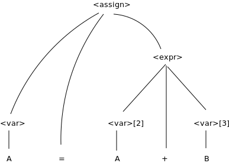
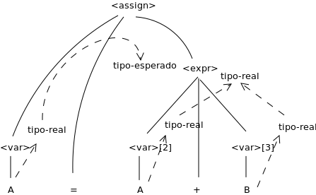
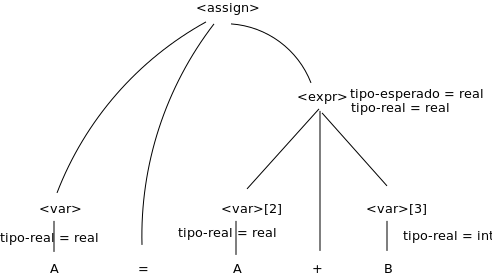

Created: 2022-08-21 dom 14:03

Regla semántica: <expr>.tipo-real ←
if (<var>[ 2].tipo-real = int) and (<var>[ 3].tipo-real = int) then int else real end if


Un intérprete de software puro también tiene problemas (dependiente de la máquina )
mi(true).
mi((A,B)) :-
mi(A),
mi(B).
mi(Goal) :-
Goal \= true,
Goal \= (_,_),
clause(Goal, Body),
mi(Body).
suponiendo que las expresiones son números decimales, variables, o expresiones binarias teniendo un operador aritmético y dos operandos, cada uno de los cuales puede ser una expresión.
La regla de la Consecuencia
\[ \frac{ \{P\} \ S \ \{Q\}, P' \Rightarrow P, Q \Rightarrow Q'}{\{P'\} \ S \ \{Q'\}} \]
\[ \frac{ \{x > 3\} \ x = x - 3 \ \{x > 0\}, (x > 5) \Rightarrow (x > 3), (x > 0) \Rightarrow (x > 0)}{\{x > 5\} \ x = x - 3 \ \{x > 0\}} \]
\[ \frac{ \{P1\} \ S1 \ \{P2\}, \{P2\} \ S2 \ \{P3\}}{\{P1\} \ S1;S2 \ \{P3\}} \]
La precondición para la segunda asignación es \( y < 7 \) la cual es usada como postcondición para la primer sentencia. La precondición para la primera asignación puede ser computada
regla de inferencia para sentencias de selección if
{P} if B then S1 else S2 {Q}
\[ \frac{ \{B \ and \ P \} \ S1 \ \{Q\}, \{(not B) \ and \ P\} \ S2 \ \{Q\}}{\{P\} \ if \ B \ then \ S1 \ else \ S2 \ \{Q\}}\]
Una regla de inferencia para un ciclo while
{P} while B do S end {Q}
\[ \frac{ (I \ and \ B ) S \{I\} }{\{I\} \ while \ B \ do \ S \{I \ and (not B)\}} \]
donde I es el invariante (la hipótesis inductiva)